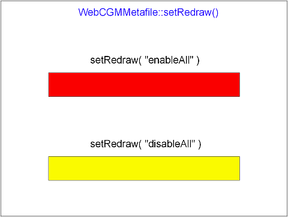

| Source image | Reference image |
|---|---|
 |
The top rectangle should gradually go from black to red (takes a total of two seconds). Two seconds after the top rectangle is completely red, the bottom rectangle should switch from black to yellow (no intermediate steps).